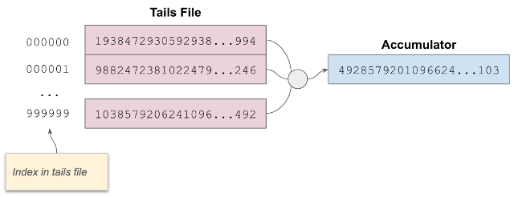

Credential Revocation¶
- Name: credential_revocation
- Author: Daniel Hardman
- Start Date: 2018-02-01 (approximate, backdated)
- HIPE PR: (leave this empty)
- Jira Issue: (leave this empty)
Summary¶
Credentials in the Indy ecosystem need to be revocable by their issuers. Revocation needs to be straightforward and fast. Testing of revocation needs to preserve privacy (be non-correlating), and it should be possible to do without contacting the issuer.
Motivation¶
This has obvious use cases for professional credentials being revoked for fraud or misconduct, and for driver’s licenses being revoked for criminal activity. However, it’s also important if a credential gets issued in error (e.g., has a typo in it that misidentifies the subject). The latter case is important even for immutable and permanent credentials such as a birth certificate.
In addition, it seems likely that the data inside credentials will change over time (e.g., a person’s mailing address or phone number updates). This is likely to be quite common, revocation can be used to guarantee currency of credential data when it happens. In other words, revocation may be used to force updated data, not just to revoke authorization.
Tutorial¶
For an ultra-high-level intro, you might consider watching this introductory video.
Background: Cryptographic Accumulators¶
Before explaining the mechanism in detail, it’s necessary to understand cryptographic accumulators at a very high level. We will try to avoid daunting math in our explanation.
You can think of an accumulator as the product of multiplying many numbers
together. In the equation a * b * c * d = e,
the accumulator would be e;
it accumulates a value as each new factor is multiplied in. We could
plug in numbers; if a=2 and b=3 and c=5 and d=7, then our accumulator
e has a value of 210. If e has this value, we
say that 3 is “in” e because it is a factor. If we want to take 3 out
of the accumulator, we divide 210 by 3 and get 70 (=2*5*7); 3 has now been
“removed”.
Notice that you can also produce e by multiplying any single
factor such as a by the product of all the other factors (b * c * d).
This is a useful characteristic; it means you can tell someone else
the value of a and the product of all the other inputs to the accumulator,
but not the other inputs themselves, and they can produce the output.
Background: Tails Files¶
In our simple example above, we only have 4 factors, and we are using small numbers. We are also using standard arithmetic, where you can reverse multiplication by dividing. In such a system, the contents of an accumulator can be reverse-engineered by simple prime factorization.
To be useful for revocation, Indy’s accumulators can’t be reversible; that is, it must be the case that the only way to derive the accumulator value is to know the factors. We accomplish this by using modular arithmetic (where division is undefined), and by using massive numbers for the factors and accumulators.
A tails file is associated with an accumulator and its factors. It is a binary file that contains an array of randomly generated factors for an accumulator. Instead of small numbers like 2 and 3 and 7, these factors are massive numbers, far too big to display conveniently on a screen. Typically the quantity of these numeric factors in a tails file is large–hundreds of thousands to tens of millions.
A tails file is not secret; it is published as plain text to the world and freely downloadable by anyone. The contents of this file never change.
Each potential or actual credential issued by a particular issuer is assigned an index to an accumulator factor in a tails file. However, only credentials that have not been revoked contribute to the value of the accumulator. We will see how this works, below.

Setup¶
Before revocable credentials can be issued, a number of things must be true about the ecosystem:
- A schema for each credential type must be written to the ledger. For example, if companies wish to issue proof of employment, then a “Employee Credential” schema needs to be published. Similarly, before birth certificate credentials can be issued, a “Birth Certificate” schema needs to be defined and made available to the public. Any number of issuers can reference the same schema. Schemas can be versioned and evolved over time. Any individual or institution can write a schema to the ledger; it does not require special privileges.
- Each issuer must publish on the ledger one credential definition for each credential type they intend to create. The definition announces the issuer’s intention to create credentials that match a particular schema, and specifies the keys that the issuer will use to sign such credentials. (The verkey+ signing key pair used to authenticate the issuer’s DID should be kept separate from the keys used to sign credentials, so that each key pair can be rotated independently; it would be bad if a sysadmin rotated a DID keypair and accidentally invalidated all credentials issued by an institution…)
- Each issuer must also publish on the ledger a revocation registry. This metadata references a credential definition and specifies how revocation for that credential type will be handled. The revocation registry tells which cryptographic accumulator can be used to test revocation, and gives the URI and hash of the associated tails file.
- Each issuer must publish on the ledger an accumulator value that describes the revocation status for all associated credentials. This accumulator must be updated on a periodic or as-needed basis. For example, if a driver’s license division revokes 3 licenses during a given work day, then when they close their doors at 5 pm, they might issue a ledger transaction that updates the accumulator value for their driver’s license credentials, removing the 3 revoked credentials from the accumulator. What we mean by “removing” is as described above– the factors listed in the tails file for the indexes associated with the 3 revoked credentials are no longer multiplied into the accumulator.

How Revocation Will Be Tested¶
Let us now skip ahead to think about what needs to happen much later. When a prover gives proof to a verifier, we normally think about the proof as focusing on core information demands: What is your birthdate? Please disclose your address. This is primary proof.
But there is another dimension of proof that’s also necessary: The prover must demonstrate that the credentials behind the primary proof have not been revoked. This is called proof of non-revocation.
In Indy, proof of non-revocation is accomplished by having provers show that they can derive the value of the accumulator for their credential using a factor for the accumulator that they know, plus the product of all other factors. The verifier can see that the prover produces the right answer (because the answer is on the ledger), but does not know certain details of how the prover derived it. The issuer can revoke by changing the answer to the math problem in a way that defeats the prover.
Preparing for Revocation at Issuance¶
When a credential is issued, the actual credential file is transmitted to the holder (who will later become a prover). In addition, the issuer communicates two other pieces of vital information:
- The index corresponding to this credential, in the tails file. This
lets the holder look up their private factor, which we could map to
ain the simple equation from the accumulator background section at the top of the doc. - The product of the other factors contributing to the accumulator (all
factors except the private one for this credential).
This value is like
b * c * dfrom the simple equation above, and is called a witness.
Presenting Proof of Non-Revocation¶
When the prover needs to demonstrate that her credential is not revoked, she shows that she can provide math that derives the accumulator value on the ledger using her private factor times the witness. She does this without actually disclosing what her private value is; this is important to avoid correlation.
But there is a complication: what if the accumulator has changed value since the time the credential was issued? In this case, the private factor times the witness will not equal the accumulator…
This is handled by requiring accumulator updates to also publish a witness delta as part of the same transaction. This delta tells provers how to adjust their witness (referencing other indexes in the public tails file) to bring it back into harmony with the current value of the accumulator, such that the updated witness times the private factor once again equals the accumulator value. If Alice is the prover, and her witness was correct for update 21 of the accumulator, but the accumulator has since changed to version 29, then she needs to fetch deltas 22-29, and apply them to her witness so it is compatible with version 29 of the accumulator.
For the technically minded, here is a bit more detail about the math.
A “witness delta” is a list of indices in the tail file that are changing
their revocation status in conjunction with the new accumulator value.
By layering all the deltas for a particular credential definition, the prover
can calculate an updated witness u by finding the product of all of the
non-revoked entries in the tails file and excluding its own entry. The Prover
also knows its own factor, b, because it was given its entry’s index in the
tails file, and can calculate u*b = e, where e is the accumulator. The
Prover derives two values (in crypto terms - commitments) Cu and Cb
based on u and b, and then calculates T from Cu and Cb
and sends all three to the verifier. The verifier uses e (the accumulator from
the ledger), Cu and Cb to calculate
its own T' and confirms that T and T' are the same. This is a zero knowledge
proof of non-revocation. For a zero knowledge proof 101 backgrounder, please see
the notes here
based on a session presented at IIW 26.
This raises the issue of timing. How does the prover know which version of the accumulator to test against? The latest version is a natural default, but it’s highly likely that we’ll want to prove, sometimes, that we had a credential that wasn’t revoked in the past (e.g., we had a driver’s license at the time of an accident, regardless of whether it’s been revoked now). This is done by expressing an acceptable timeframe (a “freshness criterion”) in the proof request. The timeframe may be open-ended on one side (e.g., “prove that your credential was still valid any time in the past week”). The more ambitious the currency goal (“must be true in the last millisecond”), the more burden the proof request places on the prover and on the network in general, so best practice would be to pick something reasonable, taking into account how often a particular issuer updates their revocations. There is no point in asking for up-to-the-second proof if an issuer only revokes credentials at the end of every month.
Note, as well, that a freshness criterion may not match the date of the accumulator. If the accumulator was last updated 6 months ago, but the verifier wants up-to-the-minute proof of non-revocation, it is still the 6-month-old version of the accumulator that will be used. Both parties can tell that this version is the latest version by querying the ledger.
Thus, non-revocation is proved by saying to the verifier: “I can show you that I know a collection of factors that, when multiplied together, produce the current value of the accumulator.” (The prover demonstrates this without revealing the factors using cryptographic commitments; that’s too deep in the math for the current discussion.) Factoring large numbers in modulator arithmetic is not practical with brute force methods, and revoked indexes are not “in” the accumulator–so the only way a prover could produce such math is if she knows the index of her own credential in the tails file, and also has enough information from published witness deltas to combine a witness with her own factor to produce the accumulator. In other words, she hasn’t been revoked, and she can’t cheat.
Putting It All Together¶
This discussion has suppressed some details. The math has been simplified, and we haven’t discussed how an issuer copes with multiple tails files and revocation registries, or why that might be desirable. However, the broad flow of the mechanism should be apparent, and its features are now easy to summarize:
- Issuers revoke by changing a number on the ledger. They can revoke as many credentials as they want in a single transaction, since they are just changing the answer to a math problem that either does or doesn’t include the factors they choose. Issuers do not have to contact anybody–provers or verifiers–to revoke. Changes take place globally, the instant the accumulator update transaction appears on the ledger.
- Revocation is reversible.
- Provers demonstrate proof of non-revocation in a privacy-preserving way. They cannot be correlated by something like a credential ID or a tails index. This is radically different from a revocation list approach, which requires correlation to test.
- Verification of proof of non-revocation is extremely easy and cheap. No tails files are needed by verifiers, and computation is trivial. Proving non-revocation is somewhat more expensive for provers, but is also not overly complex.
- Verifiers do not need to contact issuers or consult a revocation list to test revocation.
Drawbacks¶
- Revocation adds complexity to issuance, proving, and verification.
- Revocation is not a feature of W3C’s Verifiable Credentials.
Rationale and alternatives¶
- Revocation lists are an obvious solution to the revocation problem. However, this technique does not preserve privacy, since credentials have to be presented in a way that they can be correlated to the revocation list. By doing so, credentials can also be correlated to their presenter, which defeats all the privacy-preserving features in Indy’s underlying ZKP technology.
Prior art¶
See this paper by Jan Camenisch, a researcher at IBM Zurich and a member of Sovrin’s Technical Governance Board.
Unresolved questions¶
- How can the size of tails files be managed so as to be a non-issue? (This would probably involve caching, prefetch, and similar techniques. Might also involve delegation of some aspects of non-revocation computation to a cloud agent instead of an agent on a mobile device.)
- Similarly, how can the time of downloading a tails file be made not to offer a temporal correlation point? HIPE 0011-cred-revocation
- HIPE 0011-cred-revocationill we implement revocation with type3 pairings instead of type1 paHIPE 0011-cred-revocation?